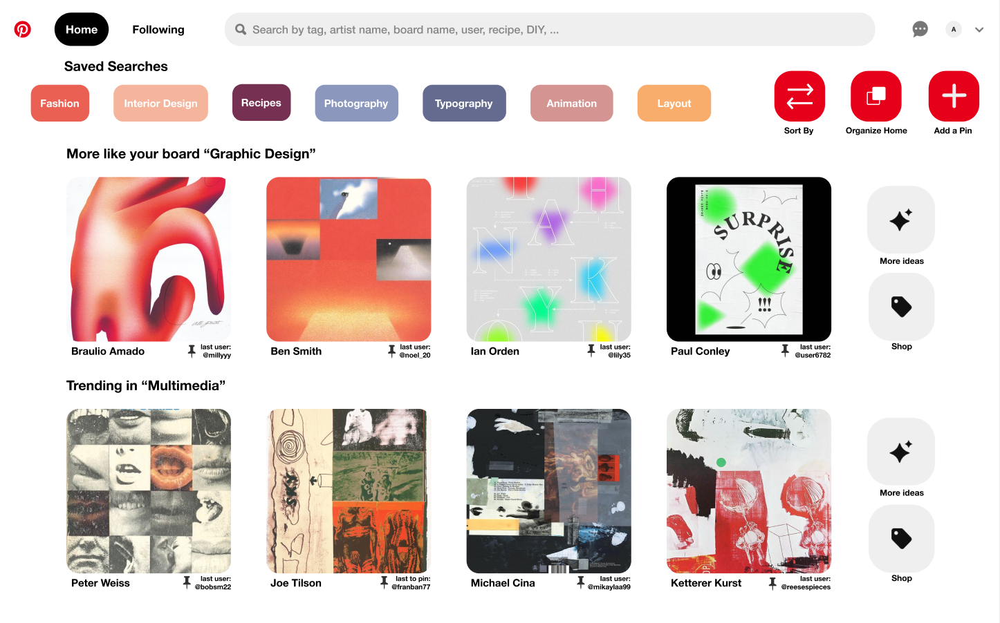

Pinterest Redesign
For my application to the Kleiner Perkins Design Fellowship, I redesigned the Home Page of Pinterest and implemented a feature allowing users to manually change the content prediction algorithm.
Background and Context
I have become an avid user of Pinterest because of my position as a Creative Director for my university's arts and fashion publication. The platform has been extremely useful for my team and I, and it has become a central way for me to put together creative inspiration. As a CD, I am responsible for creating a theme that can support four print shoots for each biannual issue that we produce. Pinterest has been the easiest way for me find and group images that materialize our concepts for moodboards and slide decks.
Working on this design project alone was definitely intimidating because I didn't want this project to simply reflect my own, preexisting perspective of Pinterest and I believe that collaboration can always bring in well-rounded and valuable insight. I tried as best I could to be self aware of my biases going in, and that this project will not be inclusive or representative of all Pinterest users due to the constraints of this design challenge.
I. Research and Key Insights
Research Strategy
1. Product Research
I decided to go through the Pinterest Home Page, Search Page, and Profile Page with an open mind and take note of its strengths and weaknesses.
2. User Research
I conducted three interviews and observations among a range of Pinterest users, from low to high usage. During these interviews, I also led an observational study where I observed the way users interacted with the interface, noting where weaknesses may lie.
Product Research
To get a high-level overview of the strengths and weaknesses of Pinterest's current design system, I took notes on the Home Page, Search Page, Profile Page, and Card Page. I wanted to navigate through Pinterest before honing in on the specific feature I redesigned.
Initial Thoughts:
1. There were a few inconsistencies across pages. For example - sometimes a search filter on the right hand side of the search bar appeared, sometimes there were filter tags on the top of the results page.
2. The search engine filtered its output by the description name of the card, rather than the card's visual features.
3. The card itself did not have tags or defining features in the description to help with filtering. There was no option on the desktop version to save the "more like this" for each card or board.
User Research
I conducted interviews with three different Pinterest users, who were each creators or designers with a need to find and organize creative inspiration, but with different frequencies and familiarities with using Pinterest.
Redesign Opportunities
After synthesizing all of the high-level findings from my initial product observations and user interviews, I was able to define redesign opportunities in terms of tangible feature changes.
How might we redesign a feature of Pinterest to both improve the user's process of searching for inspiration on Pinterest, and to make Pinterest feel more personal?
1. Grid layout of the cards feels unorganized and overwhelming.
2. Card titles and descriptions are confusing and incohesive.
3. Profiles don't feel personal and the social aspect is not heavily utilized.
4. The "more like this" page was one of the most useful features for users but does not currently have a high priority.
5. Take a deeper look into the image sorting algorithm that Pinterest uses for suggesting cards.
II. Ideation
Sketching
With all of these insights and opportunities for a redesign, I still wasn't too sure exactly where to start. The interviews really helped to give me a sense of where pain points lie during the process of using Pinterest, but I still needed to converge this information into one strong feature change. I put my ideas to paper, and started by visualizing what different solutions could look like to the various and broad problems users had with Pinterest.
Idea 1: Redesigning the Home Page
While the end goal was still to redesign the Home Page, I found it helpful to walk through the other key features on Pinterest to see how changes to those can improve the overall organization and personalization of the platform.
After lots of sketching and discussing with the same people I interviewed, I narrowed down the Home Page flow to the process above.
Idea 2: Implementing a Toggle Feature
Social media algorithms have entirely reshaped the social, political, and consumer landscapes that we collectively experience. These algorithms use data collected from past engagement, content interaction, and relevance to best predict the content that not only will be the most important to the user, but more importantly, the advertisements and brands that will best sell to the user. While their purpose is ultimately to sell products and optimize revenue, social media algorithms have an extremely adverse impact on the current social and political environment. The content that these algorithms deliver often drives users deeper into the echochamber of their thoughts and interests, and we can see the real impacts this has on political polarization , election outcomes , the increase in extremist organizations , and more.
I’m very aware of how biased my social media feeds and news outlets are, so I personally try to read and consume a wide variety of news across the political spectrum. After my interview with Noel and discussing more about how algorithms not only shape political views, but how they also warp our artistic and creative tastes, I thought about the idea of a toggle between different feed predictions.
This toggle feature allows users to manually set their content preferences. For example,
a user would be able to toggle between slightly off to completely the opposite of the algorithm's optimal prediction for your feed. If each certain category of items were given a confidence interval for how likely it is that a user will engage with that category, then under the “opposite” toggle setting, the output would be from categories that had a p-value of less than 5%. The closer that the content category is to zero means, the closer the home page is to showing content that the user would never otherwise see or interact with.
With this redesign concept, again I took the ideas to paper and began sketching.
III. Design
First Iteration
Current Home
Redesigned Home
Two Versions of the Algorithm Toggle Bar
Changes
IV. User Feedback
Lily
Milly
Noel
V. Final Prototype
The final version of the Home Page
Reflection + Next Steps
This project was honestly pretty intimidating and difficult to complete, but overall, I'm really proud of how it has turned out. Pinterest is one of my favorite and most frequently used applications, throughout this entire process I was questioning whether the changes and design decisions I was making were valid considering how strong the Pinterest research, design, and development teams are. Ultimately, I was happy with the direction I ended up taking with this project, by deciding to focus on the algorithmic aspect of Pinterest as a social media. I’m really fascinated by the idea about social media that if you are not paying for the product, you are the product, and I thought that a tool letting users manually determine their content prediction would be very powerful and eye-opening to users, advertisers, and social media applications.
Overall, this was a fun, challenging, and learning experience. I deeply respect and appreciate the designers and developers at Pinterest, it is so evident how hard they have worked to create a beautiful and usable experience. I would love to receive feedback on my designs with how effective they were in communicating my concepts, and how well they align with Pinterest’s existing mission.